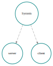
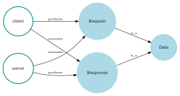
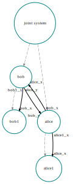

Framework design
Here we describe the design principles of the AlgebraicAgents. It should be of most use to advanced users and persons interested in contributing to the software. New users are encouraged to start by reading one of the tutorials ("sketches").
Simulation loop
We describe here the main simulation loop which steps models built in AlgebraicAgents forward in time.
AlgebraicAgents keeps agents synchronized by ensuring that the model will only simulate the agent(s) whose projected time (e.g. the maximum time for which that agent's trajectory has been solved) is the minimum of all agents. For example, if there are 3 agents, whose internal step sizes are of 1, 1.5, and 3 time units, respectively, then at the end of the first step, their projected time will be 1, 1.5, and 3 (assuming they all start at time 0). The simulation will find the minimum of those times and only simulate the agent(s) whose projected time(s) are equal to the minimum. In this case, it is the first agent, who is now projected to time 2 on the second step (other agents are not simulated). Now, the new minimum time is 1.5, and the second agent is projected to time 3 on the third step, etc. The simulation continues until all agents have been projected to their final time point, or the minimum of projected times reaches a maximum time horizon. If all agents take time steps of the same size, then they will all be updated each global step.
There are several functions in the interface for an AbstractAlgebraicAgent which implement these dynamics. When defining new agent types, one should implement the AlgebraicAgents._step! method, which will step that agent forward if its projected time is equal to the least projected time, among all agents in the hierarchy. Agent types also need to implement AlgebraicAgents._projected_to, which is crucial to keeping the simulation synchronized. It will return:
nothingif the agent does not implement its own_step!rule (e.g.FreeAgentwhich is a container of agents)trueif the agent has been projected to the final time point (_step!will not be called again)- a value of
Number, giving the time point to which the agent has been projected
These are collected into ret, which is an object that will be true if and only if all agents have returned true, and is otherwise the minimum of the numeric values (projection times) returned from each inner agent's step.
Above we show a caricature of the main simulation loop. "Enter program" corresponds to the call to simulate, the value of ret is (typically) initialized to 0.0. The simulation continues to step while ret is not true (meaning the maximum time horizon has been reached by the slowest agent), or has not exceeded some maximum.
The inner area enclosed by a dashed border represents where program control is given to the step! method. The root agent applies _prestep! recurvisely to all of its inner (enclosed) agents. After this, step! is then applied to all inner agents, and ret is updated by each of them. Then the agent applies its own local update _step! if its own projected time is equal to the minimum of all inner agent projected times (not shown). Then the Opera module for additional interactions is called for the root agent.
Opera
The Opera system allows interactions between agents to be scheduled. By default, AlgebraicAgents.jl provides support for three types of interactions:
- futures (delayed interactions)
- system controls
- instantious interactions
For more details, see the API documentation of Opera and our tests.
Futures
You may schedule function calls, to be executed at predetermined points of time. An action is modeled as a tuple (id, call, time), where id is an optional textual identifier of the action and call is a (parameterless) anonymous function, which will be called at the given time. Once the action is executed, the return value with corresponding action id and execution time is added to futures_log field of Opera instance.
See add_future! and @future.
Example
alice = MyAgentType("alice")
interact = agent -> wake_up!(agent)
@future alice 5.0 interact(alice) "alice_schedule"The solver will stop at t=5 and call the function () -> interact(alice) (a closure is taken at the time when @future is invoked). This interaction is identified as "alice_schedule".
Control Interactions
You may schedule control function calls, to be executed at every step of the model. An action is modeled as a tuple (id, call), where id is an optional textual identifier of the action, and call is a (parameterless) anonymous function. Once the action is executed, the return value with corresponding action id and execution time is added to controls_log field of Opera instance.
See add_control! and @control.
Example
system = MyAgentType("system")
control = agent -> agent.temp > 100 && cool!(agent)
@control system control(system) "temperature control"At each step, the solver will call the function () -> control(system) (a closure is taken at the time when @future is invoked).
Instantious Interactions
You may schedule additional interactions which exist within a single step of the model; such actions are modeled as named tuples (id, priority=0., call). Here, call is a (parameterless) anonymous function.
They exist within a single step of the model and are executed after the calls to _prestep! and _step! finish, in the order of the assigned priorities.
In particular, you may schedule interactions of two kinds:
poke(agent, priority), which will translate into a call() -> _interact!(agent), with the specified priority,@call opera expresion priority, which will translate into a call() -> expression, with the specified priority.
Examples
# `poke`
poke(agent, 1.) # call `_interact!(agent)`; this call is added to the instantious priority queue with priority 1# `@call`
bob_agent = only(getagent(agent, r"bob"))
@call agent wake_up(bob_agent) # translates into `() -> wake_up(bob_agent)` with priority 0Concepts, Relations, and Wires
AlgebraicAgents.jl is designed to enable semantic modeling of complex systems by representing key elements as concepts, the relations between them, and agents connected via wires that explicitly define information flow. While leveraging these features is entirely optional and not required for the core functionality of the library, they offer powerful tools for model comprehension, visualization, querying, and debugging.
Concepts and Relations
A concept is a subtype of AbstractConcept and represents an entity characterized by a name and an internal parameter space. Both concepts and agents belong to the union type RelatableType, allowing flexible relationships to be established between any two relatable entities—for example, between agents and concepts or between agents themselves.
Relations are oriented, meaning each relation has a designated source, target, and a relation type, represented as a Symbol. These complex relationships can be effectively visualized using the concept_graph function, providing insights into the structure and interconnections within the model.
Consider the following example. First, we set up the hierarchy.
Next we define generic concepts and their relations. Concepts are defined using the Concept type, which can be used to create abstract containers for data, requests, responses, etc. Relations between concepts and agents are established using the add_relation! function.
c_data = Concept("Data", Dict(:format => "binary")) # abstract container
c_request = Concept("Request", Dict(:purpose => "query")) # a kind of Data
c_response = Concept("Response", Dict(:purpose => "reply")) # a kind of Data
# Bind all Concepts into our system
add_concept!(system, c_data)
# Multiple concepts can be added at once.
add_concept!.(Ref(system), [c_request, c_response])2-element Vector{Vector{AbstractConcept}}:
[Concept{name=Data, uuid=57bbfc49, related_entities=}, Concept{name=Request, uuid=493f132b, related_entities=}, Concept{name=Response, uuid=9f9e16de, related_entities=}]
[Concept{name=Data, uuid=57bbfc49, related_entities=}, Concept{name=Request, uuid=493f132b, related_entities=}, Concept{name=Response, uuid=9f9e16de, related_entities=}]Next, we can establish relations between agents and concepts, as well as between concepts themselves. This allows us to define the roles of agents in the system and how they interact with the concepts.
# ----- Set up Concept–Concept relations -----
# Request ⊂ Data
add_relation!(c_request, c_data, :is_a)
# Response ⊂ Data
add_relation!(c_response, c_data, :is_a)
# ----- Set up Agent–Concept relations -----
# Client produces requests and consumes responses
add_relation!(client, c_request, :produces)
add_relation!(client, c_response, :consumes)
# Server consumes requests and produces responses
add_relation!(server, c_request, :consumes)
add_relation!(server, c_response, :produces)relation server [agent] produces Response [concept]Now we can query the relations.
# Query related concepts/agents
println("Entities related to Data:")
for r in get_relations(c_data)
println(r)
endEntities related to Data:
AlgebraicAgents.ConceptRelation{from=Request, relation=is_a, to=Data}
AlgebraicAgents.ConceptRelation{from=Response, relation=is_a, to=Data}println("Entites that Client produces:")
for r in get_relations(client, :produces)
println(r)
endEntites that Client produces:
AlgebraicAgents.ConceptRelation{from=client, relation=produces, to=Request}isrelated(client, c_request, :produces) == truetrueWe can also visualize the concept graph, which shows the relations between concepts and agents in the system.
# ----- Visualize the wires and relations -----
# Visualize the wiring diagram of the system
run_graphviz("gv1.svg" ,wiring_diagram(system))
# Visualize the concept graph of the system
run_graphviz("gv2.svg", concept_graph(get_relation_closure(server)))
Finally, we show how to remove concepts and relations. This can be useful for cleaning up the model or when concepts are no longer relevant.
# Remove the concept-to-concept relation
remove_relation!(c_data, c_request, :is_a)
# Remove the Fruit concept entirely
remove_concept!(server, c_request)concept Request with uuid 493f132b of type ConceptWires
It is possible to explicitly establish oriented "wires" along which information flows between different agents in a hierarchy. Note that it is optional to define these wires and in general, it is possible to retrieve and modify the state of any other agent from within any agent, in any way. However, in some cases, it may be desirable to explicitly specify that certain agents observe a particular state variable of another agent, for example, to visualize the information flow in a model, or to query the state of the system in a more structured way.
Consider the following example. First, we set up the hierarchy.
alice = MyAgentType("alice")
alice1 = MyAgentType("alice1")
entangle!(alice, alice1)
bob = MyAgentType("bob")
bob1 = MyAgentType("bob1")
entangle!(bob, bob1)
joint_system = ⊕(alice, bob, name = "joint system")agent joint system with uuid 26bc8fb5 of type FreeAgent
inner agents:
agent alice with uuid 19c4439c of type Main.MyAgentType
inner agents: alice1
agent bob with uuid 97c56935 of type Main.MyAgentType
inner agents: bob1We then add the wires. Note that the agents connected by a wire can be specified using the respective agent objects, relative paths, or their UUIDs.
Additionally, you can assign names to the edges of a wire (which are nothing by default). These names can subsequently be used to fetch the information incoming along an edge, a process that we will describe below.
add_wire!(joint_system; from=alice, to=bob, from_var_name="alice_x", to_var_name="bob_x")
add_wire!(joint_system; from=bob, to=alice, from_var_name="bob_y", to_var_name="alice_y")
add_wire!(joint_system; from=alice, to=alice1, from_var_name="alice_x", to_var_name="alice1_x")
add_wire!(joint_system; from=bob, to=bob1, from_var_name="bob_x", to_var_name="bob1_x")4-element Vector{NamedTuple{(:from, :from_var_name, :to, :to_var_name), <:Tuple{AbstractAlgebraicAgent, Any, AbstractAlgebraicAgent, Any}}}:
(from = Main.MyAgentType{name=alice, uuid=19c4439c, parent=FreeAgent{name=joint system, uuid=26bc8fb5, parent=nothing}}, from_var_name = "alice_x", to = Main.MyAgentType{name=bob, uuid=97c56935, parent=FreeAgent{name=joint system, uuid=26bc8fb5, parent=nothing}}, to_var_name = "bob_x")
(from = Main.MyAgentType{name=bob, uuid=97c56935, parent=FreeAgent{name=joint system, uuid=26bc8fb5, parent=nothing}}, from_var_name = "bob_y", to = Main.MyAgentType{name=alice, uuid=19c4439c, parent=FreeAgent{name=joint system, uuid=26bc8fb5, parent=nothing}}, to_var_name = "alice_y")
(from = Main.MyAgentType{name=alice, uuid=19c4439c, parent=FreeAgent{name=joint system, uuid=26bc8fb5, parent=nothing}}, from_var_name = "alice_x", to = Main.MyAgentType{name=alice1, uuid=b0dd07be, parent=Main.MyAgentType{name=alice, uuid=19c4439c, parent=FreeAgent{name=joint system, uuid=26bc8fb5, parent=nothing}}}, to_var_name = "alice1_x")
(from = Main.MyAgentType{name=bob, uuid=97c56935, parent=FreeAgent{name=joint system, uuid=26bc8fb5, parent=nothing}}, from_var_name = "bob_x", to = Main.MyAgentType{name=bob1, uuid=6093063d, parent=Main.MyAgentType{name=bob, uuid=97c56935, parent=FreeAgent{name=joint system, uuid=26bc8fb5, parent=nothing}}}, to_var_name = "bob1_x")We list the wires going from and to alice and alice1, respectively.
get_wires_from(alice)2-element Vector{NamedTuple{(:from, :from_var_name, :to, :to_var_name), <:Tuple{AbstractAlgebraicAgent, Any, AbstractAlgebraicAgent, Any}}}:
(from = Main.MyAgentType{name=alice, uuid=19c4439c, parent=FreeAgent{name=joint system, uuid=26bc8fb5, parent=nothing}}, from_var_name = "alice_x", to = Main.MyAgentType{name=bob, uuid=97c56935, parent=FreeAgent{name=joint system, uuid=26bc8fb5, parent=nothing}}, to_var_name = "bob_x")
(from = Main.MyAgentType{name=alice, uuid=19c4439c, parent=FreeAgent{name=joint system, uuid=26bc8fb5, parent=nothing}}, from_var_name = "alice_x", to = Main.MyAgentType{name=alice1, uuid=b0dd07be, parent=Main.MyAgentType{name=alice, uuid=19c4439c, parent=FreeAgent{name=joint system, uuid=26bc8fb5, parent=nothing}}}, to_var_name = "alice1_x")get_wires_to(alice1)1-element Vector{NamedTuple{(:from, :from_var_name, :to, :to_var_name), <:Tuple{AbstractAlgebraicAgent, Any, AbstractAlgebraicAgent, Any}}}:
(from = Main.MyAgentType{name=alice, uuid=19c4439c, parent=FreeAgent{name=joint system, uuid=26bc8fb5, parent=nothing}}, from_var_name = "alice_x", to = Main.MyAgentType{name=alice1, uuid=b0dd07be, parent=Main.MyAgentType{name=alice, uuid=19c4439c, parent=FreeAgent{name=joint system, uuid=26bc8fb5, parent=nothing}}}, to_var_name = "alice1_x")All the wires within an hierarchy can be retrieved as follows:
getopera(joint_system).wires4-element Vector{NamedTuple{(:from, :from_var_name, :to, :to_var_name), <:Tuple{AbstractAlgebraicAgent, Any, AbstractAlgebraicAgent, Any}}}:
(from = Main.MyAgentType{name=alice, uuid=19c4439c, parent=FreeAgent{name=joint system, uuid=26bc8fb5, parent=nothing}}, from_var_name = "alice_x", to = Main.MyAgentType{name=bob, uuid=97c56935, parent=FreeAgent{name=joint system, uuid=26bc8fb5, parent=nothing}}, to_var_name = "bob_x")
(from = Main.MyAgentType{name=bob, uuid=97c56935, parent=FreeAgent{name=joint system, uuid=26bc8fb5, parent=nothing}}, from_var_name = "bob_y", to = Main.MyAgentType{name=alice, uuid=19c4439c, parent=FreeAgent{name=joint system, uuid=26bc8fb5, parent=nothing}}, to_var_name = "alice_y")
(from = Main.MyAgentType{name=alice, uuid=19c4439c, parent=FreeAgent{name=joint system, uuid=26bc8fb5, parent=nothing}}, from_var_name = "alice_x", to = Main.MyAgentType{name=alice1, uuid=b0dd07be, parent=Main.MyAgentType{name=alice, uuid=19c4439c, parent=FreeAgent{name=joint system, uuid=26bc8fb5, parent=nothing}}}, to_var_name = "alice1_x")
(from = Main.MyAgentType{name=bob, uuid=97c56935, parent=FreeAgent{name=joint system, uuid=26bc8fb5, parent=nothing}}, from_var_name = "bob_x", to = Main.MyAgentType{name=bob1, uuid=6093063d, parent=Main.MyAgentType{name=bob, uuid=97c56935, parent=FreeAgent{name=joint system, uuid=26bc8fb5, parent=nothing}}}, to_var_name = "bob1_x")Given an agent, if getobservable is implemented for all agents that feed information into the specific agent, we can fetch the values incoming to it.
AlgebraicAgents.getobservable(a::MyAgentType, args...) = getname(a)
retrieve_input_vars(alice1)Dict{String, String} with 1 entry:
"alice1_x" => "alice"Additionally, we can plot the agents in the hierarchy, displaying the links between parents and children, along with the wires. The output can be adjusted as needed. Note that it is also possible to export an agent hierarchy as a Mermaid diagram. See typetree_mmd and agent_hierarchy_mmd.
In what follows, wiring_diagram generates a visually appealing Graphviz diagram.
graph1 = wiring_diagram(joint_system)
run_graphviz("gv3.svg", graph1)
# Do not show edges between parents and children.
graph2 = wiring_diagram(joint_system; parentship_edges=false)
run_graphviz("gv4.svg", graph2)
# Only show listed agents.
graph3 = wiring_diagram([alice, alice1, bob, bob1])
run_graphviz("gv5.svg", graph3)
# Group agents into two clusters.
graph4 = wiring_diagram([[alice, alice1], [bob, bob1]])
run_graphviz("gv4.svg", graph4)
# Provide labels for clusters.
graph5 = wiring_diagram([[alice, alice1], [bob, bob1]]; group_labels=["alice", "bob"], parentship_edges=false)
run_graphviz("gv5.svg", graph5)